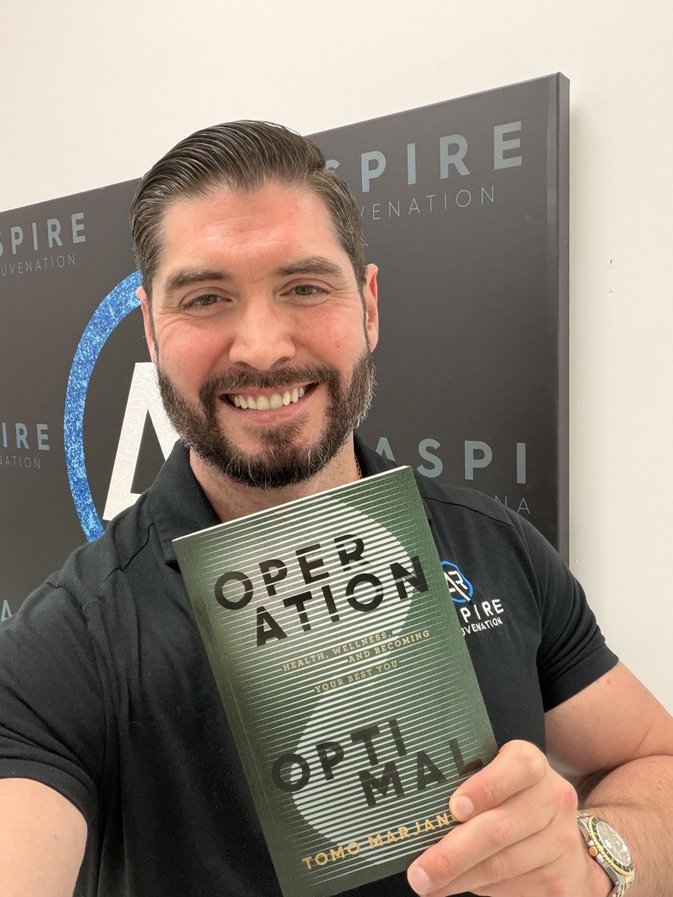
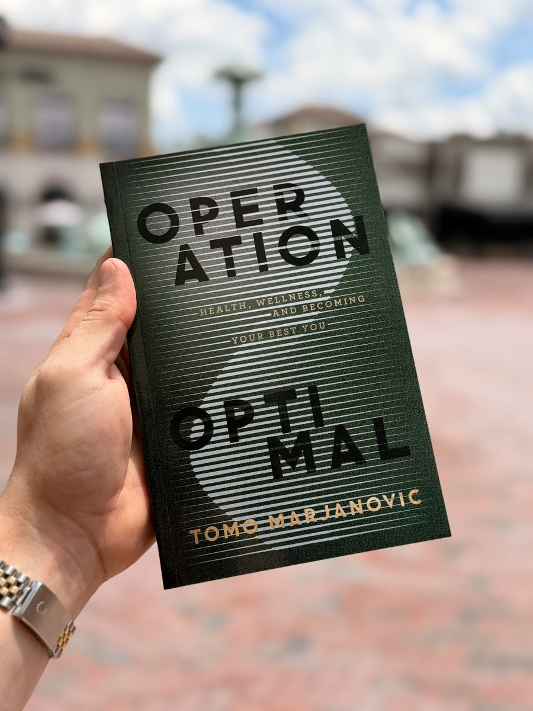
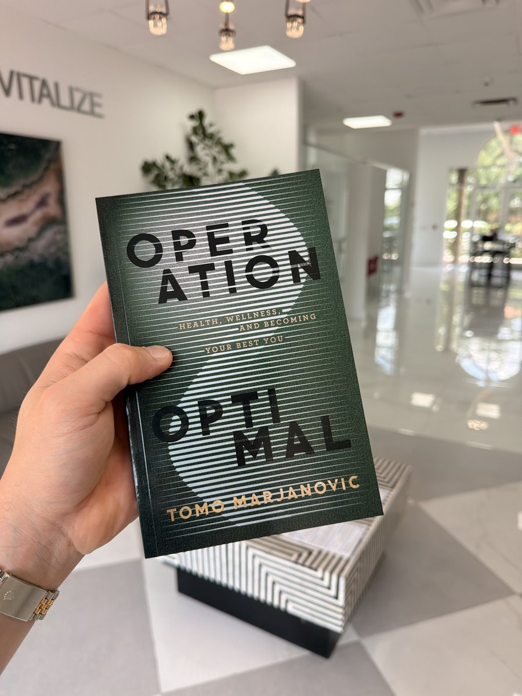

6 slides • Photo: tomo-img_4597.jpg (selfie at Aspire)
OPERATION OPTIMAL
FROM THE BOOK
NOBODY'S COMING TO SAVE YOU.
OPERATION OPTIMAL
Not your doctor. Not the medical system. Not some miracle drug or next-generation treatment. If you want to be healthy, truly healthy, it's on you. It's your responsibility. And honestly? It's your fault if you're not.
I know that sounds harsh, but it's the truth. And the truth is beautiful once you understand it. Because if your health is your responsibility, that means you have the power to change it right now.
OPERATION OPTIMAL
"This book isn't about complicated protocols or expensive treatments. It's about taking responsibility. It's about understanding that the more muscle you have, the longer you'll live. That your gut health affects your brain. That your physical body and mental health are completely tied together."
OPERATION OPTIMAL
The recipe is simple:
Stop eating fast food. Stop drinking soda. Go for walks.
Those three things alone could change your entire life.
The difficulty is in doing the work.
OPERATION OPTIMAL
Just give five percent effort to start. Change one habit. Then another.
That's how you become someone unrecognizable from who you are today.
Our health is failing us because our healthcare has betrayed it.
Big Pharma and Big Medicine celebrate our symptom suppression as success; normalizes our chronic fatigue as adulthood; and mistakes our over-medication for medicine. Behind their sterile masks of "standards of care" lies a machine designed to keep us dependent, docile, and just alive enough to pay for more.
OPERATION OPTIMAL
"We live in the greatest chronic illness crisis the world has ever seen, and modern medicine's answer is pills before progress. It's like patching the Titanic with chewing gum."
OPERATION OPTIMAL
I decided to follow my doctor's advice. Instead of treating my pain by taking painkillers, I committed to strengthening my body.
I was ambitious. When I was 19, I told my coach I wanted to be Mr. Olympia. I wanted to take steroids. My coach laughed and told me to get my labs done first!
That's how my journey into bodybuilding, fitness modeling, and studying anti-aging, hormones, and wellness began.
OPERATION OPTIMAL
Doctors today are too focused on symptom treatment and not symptom prevention.
We've gotten used to the second-rate. We blindly trust authority and funnel ourselves into a system I call "a pill for every ill" — a system that addresses symptoms and not the root causes of our chronic illnesses.
OPERATION OPTIMAL
This book is about empowering you to go on your own health journey without Big Pharma, Big Medicine, or mainstream doctors dictating how it's going to be.
It's your body, and you should be the expert on it, not someone else!

OWN YOUR HEALTH
Link in bio to get your copy
operationoptimal.com
CAROUSEL 3 — CHAPTER 3: HACKING YOUR WAY TO HEALTH
7 slides • Photo: tomo-img_4594.jpg (outdoor, book up)
OPERATION OPTIMAL
CHAPTER 3
THERE ARE NO SHORTCUTS TO HEALTH. TO WEALTH. TO LEGACY.
OPERATION OPTIMAL
The road to optimal health isn't a sprint. There are no shortcuts or hacks. It's a marathon. Every step counts.
This chapter is about avoiding shortcuts, leaning into the hurt, and bringing your whole body and mind to bear in your daily routine. We'll get into workout tips, diet, and motivation.
Don't wait around. Let's get moving.
OPERATION OPTIMAL
THE REAL COST OF FOOD
JUNK-HEAVY CART
$104
Snacks, sugary drinks, frozen convenience meals
VS
WHOLE-FOOD CART
$64
Produce, lean proteins, beans, grains, yogurt
A healthy grocery list can cost around 40% less per trip than junk-food choices. Don't let the lie keep you broke and sick.
OPERATION OPTIMAL
"There's no hack to health; you have to hack your way to health with the determination, discipline, and positivity it would take to chop down the Amazon rainforest using only a handaxe."
Now imagine that you're also the trees, and for every drop of effort you put in, you get twice as strong.
OPERATION OPTIMAL
The goal of all of this is not masochism.
You go through the hurt to get to the healthy, and you go through the healthy to get to the happy.
OPERATION OPTIMAL
ACTION STEPS
1
Train your whole body, not just your favorites
Don't skip leg day, back day, or cardio. A strong body is a balanced body. Commit to a weekly split that hits every major muscle group.
2
Eliminate one shortcut you're relying on
Identify a habit that feels productive but is really avoidance. Replace it with cold showers, a disciplined routine, or simply pushing harder.
3
Start your morning with a win
Cold water to the face, 20 bodyweight reps, then a clean whole food meal. Start strong, and the rest of your day will follow.

NO MORE SHORTCUTS
Link in bio to get your copy
operationoptimal.com
CAROUSEL 4 — CHAPTER 5: BECOME YOUR BODY'S BEST EXPERT
7 slides • Photo: tomo-79969445494 (books in lobby)
OPERATION OPTIMAL
CHAPTER 5
YOUR DOCTOR SPENDS 12 MINUTES WITH YOU.
OPERATION OPTIMAL
Have you ever taken a test and the teacher lets you bring in a one-page cheat sheet?
That's what this chapter is about — except this time, the test is your physical health, the classroom is your doctor's office, and the cheat-sheet is a challenge-sheet that equips you with essential knowledge, empowers you to push back on your doctor's assumptions and biases, and teaches you how to be informed on that most important of all subjects, YOU!
OPERATION OPTIMAL
The average patient spends just above twelve minutes with their primary care provider. Is that enough time for a truly whole-body analysis and discussion?
Hell no!
The yearly checkup assembly line goes something like this:
GENERIC TEST → RED FLAG → PRESCRIPTION → NEXT!
OPERATION OPTIMAL
Your body runs on hormones, period. I don't care if you're a Fortune 500 CEO or living under a bridge, your entire system is dictated by hormones.
Think of them like the fuel in your car, but also the cruise control, making sure you're not red-lining or stalling out. Without hormones, there's no movement, no rhythm, no homeostasis, and without that balance, everything starts to break down.
OPERATION OPTIMAL
You fix the system by understanding the system.
Good research isn't just about facts. It's about questions. It's about knowing what to ask and where to look for the answer.
You're not looking for a pill. You're looking for the breakdown in the chain.
OPERATION OPTIMAL
ACTION STEPS
1
Bring a challenge sheet to your next physical
Ask what they're testing, what they're not testing, and why. If your doctor gives you pushback, don't fold. Push back.
2
Build baseline knowledge with real learning
Study how your body works when it's not broken. Understand the hormone cascade — how signaling works and how upstream problems lead to downstream symptoms.
3
Reverse-engineer one symptom you've been ignoring
Trace it upstream. What hormone systems affect it? What markers should be tested? Schedule bloodwork and treat it like a real investigation.

BECOME YOUR OWN EXPERT
Link in bio to get your copy
operationoptimal.com
CAROUSEL 5 — CHAPTER 11: OPTIMIZING FOR HAPPINESS
7 slides • Photo: tomo-img_4598.jpg (Aspire polo)
OPERATION OPTIMAL
CHAPTER 11
DISCIPLINE OVER EMOTION.
OPERATION OPTIMAL
Most people chase happiness through pleasure, money, or status, mistaking comfort for fulfillment, but that's hedonism. True happiness isn't found in possessions or temporary highs; it's built on health, both physical and mental.
Without health, lasting happiness is impossible. Even those facing illness can find peace through acceptance and gratitude, yet they'd undoubtedly be happier without disease.
OPERATION OPTIMAL
If hedonism is the sickness of our culture, Stoicism is the cure. This philosophy redefines happiness not as pleasure, but as discipline, the alignment of mind, body, and spirit with purpose.
We can't control external events, only our reactions. If a hurricane destroys my house, I can cry, or I can act. Stoicism means choosing strength, choosing to act.
Stress can kill. Control it before it controls you.
OPERATION OPTIMAL
WE ALL HEAR THAT INNER CRITIC
"I can't do this."
"I'm not good enough."
"I'm an imposter."
BUT YOU CAN CHOOSE THE RESPONSE
"No, I can do this."
"No, I am enough."
"No, I am the real deal."
OPERATION OPTIMAL
TOMO'S MORNING PRAYER
"I understand that everything is my fault. I understand the power I hold through focused action. I am not and have never been a victim. I'm grateful for the challenges God has blessed me with. If I ask one thing, it's for patience and understanding so I may walk through adversity with a smile."
OPERATION OPTIMAL
ACTION STEPS
1
Start a gratitude practice
Every morning, write down at least three things you are grateful for. Keep them in a journal or a jar and review them weekly.
2
Reframe your self-talk
When negative thoughts arise, acknowledge them, then immediately replace them with affirmations aligned with your values. Practice daily until positive self-talk becomes automatic.
3
Live authentically
Journal about who you truly want to be and take one small step each week that aligns your actions with that authentic self.
It's never too late to change. I hope that's clear by now. Your own Operation Optimal starts and ends with one person: you.
Every chapter in this book has pointed towards a single truth: you are the solution to your own problem. No doctor, pill, or quick fix can replace the mindset that everything in your life — your health, your wealth, your happiness — begins with ownership.
OPERATION OPTIMAL
WHEN THINGS GO WRONG
"I lost my relationship... it's my fault."
"I got fired... it's my fault."
"I was diagnosed with type II diabetes... it's my fault."
OPERATION OPTIMAL
WHEN THINGS GO RIGHT
"I bought my dream car... it's my fault."
"My business is thriving again... it's my fault."
"I've trained hard and feel stronger than ever... it's my fault."
OPERATION OPTIMAL
Ownership works both ways. The same radical accountability that forces you to face your failures also gives you credit for your victories.
If it's your fault, that means it's in your hands to fix.
I have the power to create positive change.
I'm responsible for what happens to me.
Every obstacle is an opportunity.
God has given me room to grow.
OPERATION OPTIMAL
No matter your age — 25, 60, or 85 — the door is still open.
What matters isn't where you start; it's whether you decide to start at all.